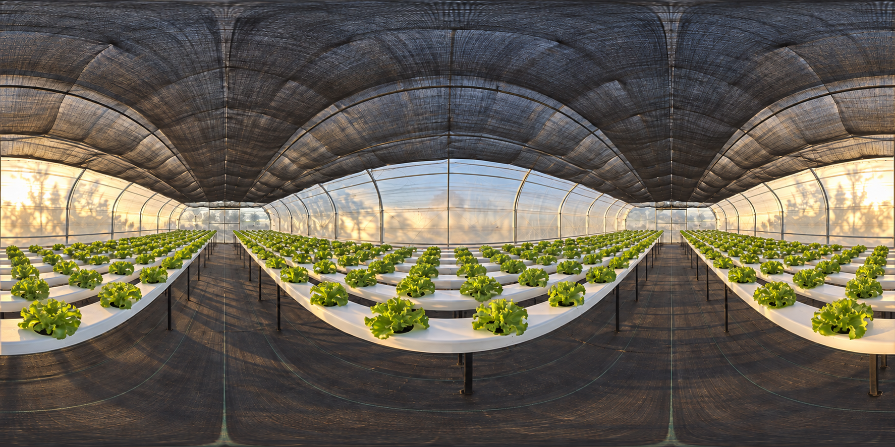

VISTA 360°
Una mirada alrededor.
Girá la vista y explorá el invernadero desde otra perspectiva.

Arrastrá hacia los costados para girar. Usá el control para mirar arriba o abajo. Con teclado: flechas para mirar, + y − para acercar o alejar, Inicio para restablecer. La rueda sigue desplazando la página.